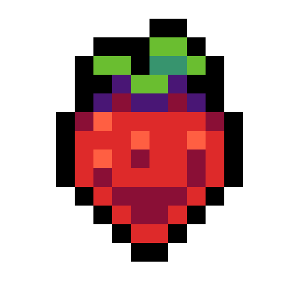

CelesteDetails
 |
|
| Spielzeit | Nicht gespielt |
| Letzte Aktivität | Nie |
| Hinzugefügt | 13.01.2022 15:49:45 |
| Modifiziert | 13.01.2022 16:07:27 |
| Fertigstellungsstatus | Not Played |
| Bibliothek | Playnite |
| Quelle | |
| Plattform | PC (Windows) |
| Veröffentlichungsdatum | 25.01.2018 |
| Community Bewertungen | 96 |
| Kritiker Punkte | 88 |
| Benutzerwertung | |
| Genre | Action Adventure Indie |
| Entwickler | Extremely OK Games, Ltd. |
| Verleger | Matt Makes Games Inc. |
| Eigenschaft | Achievements Cloud Saves Full Controller Support Remote Play On Phone Remote Play On Tablet Remote Play On TV Single Player Trading Cards |
| Links | Communityhub Diskussionen Guides Neuigkeiten Shopseite PCGamingWiki Errungenschaften |
| Tag | |
Beschreibung
Help Madeline survive her inner demons on her journey to the top of Celeste Mountain, in this super-tight, hand-crafted platformer from the creators of multiplayer classic TowerFall.

This is it, Madeline. Just breathe. You can do this.


- A narrative-driven, single-player adventure like mom used to make, with a charming cast of characters and a touching story of self-discovery
- A massive mountain teeming with 700+ screens of hardcore platforming challenges and devious secrets
- Brutal B-side chapters to unlock, built for only the bravest mountaineers
- IGF “Excellence in Audio” finalist, with over 2 hours of original music led by dazzling live piano and catchy synth beats
- Pie
This is it, Madeline. Just breathe. You can do this.